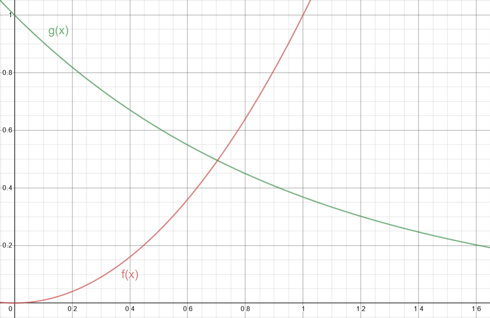
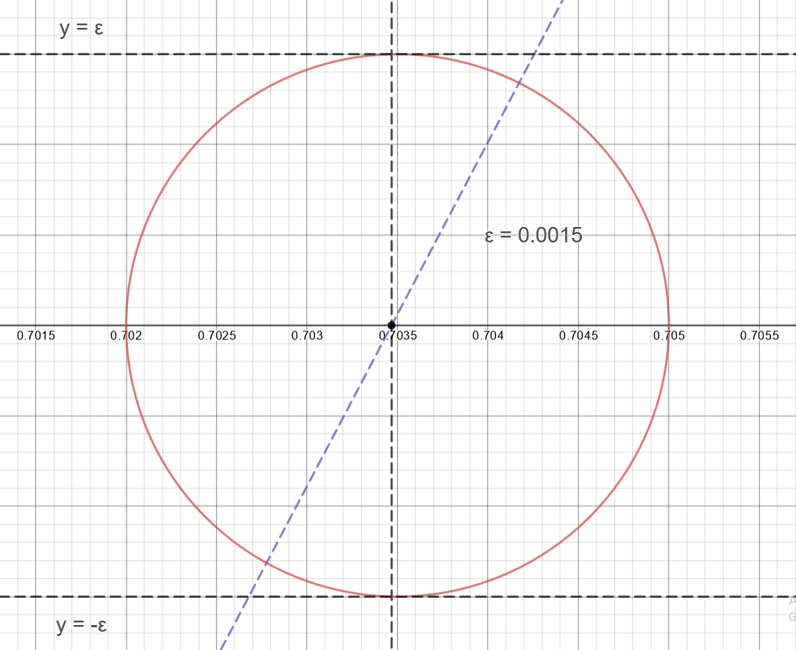

Polynomial Smooth Minimum
TL;DR: Live shader at bottom of page.
Iñigo Quilez, hallowed be his name, made a function useful for the procedural modeling of organic shapes called smin.
He wrote a very nice article about it here .
It's a foundational technique to get natural looking shapes because nature is continuous (At least that's what they told me in school anyway) and a simple union of two shapes is not.
"The first time you see something it's a trick, the second time it's a technique" -Richard Foote
I'm writing this for anyone that is trying to learn this stuff and for whom it's still a trick.
This is also a great way to catalogue my own thoughts, I can only reluctantly use some derived result if I don't understand where it's coming from. (Incidentally, this made undergraduate physics and math work a little unbearable.)
It was difficult to follow Iq's derivation in his article, surely the material is just so obvious to him that the terseness with which his derivation was written wasn't intentional.
In my opinion, especially for the beginner like me, derivations are not the place for compactness, especially for something so foundational.
I normally am able to follow this kind of thing fairly well, so I can only imagine other people would also be a bit confused.
If you want to see the same derivation from someone else, my main resource for understanding this besides the original article was
Vinicius Graciano
; all credit goes to him, even though his derivation is almost as equally terse, it spurned my thoughts in the right direction.
It really gave me pause to see a couple really smart guys I follow using this function without fulling understanding it or deriving it correctly.
See: Sebastian Lague and
The Art of Code
Both are far more productive, experienced and knowledgable than me, so maybe the real takeaway of this derivation is to choose my battles more wisely.
There is however something deeply fruitful about reinventing the wheel, despite the glaring loss in productivity.
So maybe I'll just keep on rederiving everything, never making something new or expanding on anything, but there will be blackjack and hookers.
Looking at Iq's article, the example of the polynomial smin seems to be getting a smooth minimum between some decreasing exponential and a sinusoid. That seems a little hard to think about right now with it's many intersection points to account for, so let's just look at a decreasing exponential with one intersection
Our functions; $f(x) = x^2$ and $g(x) = e^(-x)$.
The simple union for our two functions

Looking at this hard minimum, we can imagine a smooth curve in its place that connects $f$ and $g$ when the functions are sufficiently close to their intersection. But what does sufficiently close mean more precisely, $i.e$ where should the constructed function stop being $f$ and start being $g$?
Our functions with their difference $d = f(x) - g(x)$
Now for a reasonably useless aside:
At first blush, it's not obvious to me how to make a meaningful relationship or constraint between the two functions
beyond that they're equal to each other at their intersection. This gives us a point $C$, $d = 0$ and its mapping $x$-value
Looking at a given $ε$ neighborhood around this point, you can see that $d$ must be on the interval $[d(x-ε), d(x+ε)]$ which are small, not necessarily identical values.

Well, now we're at loss about how to generalize along this line of thinking.
And it gets worse, talking about points close to where a root of a function is requires us to know where the root is in the first place. This is a non trivial thing and a whole numerical method in its own right.
And even worse... iq's original diagram was of some flavor of a sinusoid and its intersection with a decreasing exponential has infinitely many roots.
We're noping on out of here my friend, it's just too messy; we'll need to think of another relationship characteristic of proximity to the intersection.
A helpful observation is to note that this $ε$ could be made arbitrarily small, small enough to where $[d(x-ε), d(x+ε)]$ is smaller than our original epsilon.

It's also helpful to note that the difference between two polynomials is also a polynomial and that polynomials are continuous everywhere.
So, by the intermediate value theorem, for some small value say $k$, $d∈ [-k, k]$.
"Sufficiently close" to an intersection then could be recast in terms of the difference's value instead of being near its root; the two are isomorphic to each other.
Note however that $d$ reaches $-k$ and $k$ at different rates, however slightly different, as discussed previously and if we are planning on using this interval as our generalized way to talk about being close to the intersection
our choice of $k$ will affect how the curve stiches to its base functions.
In the limit close to $C$ this doesnt matter, but for medium sized choices of $k$ I think you could play around with how $k$ changes before and after $C$ to get something more uniform or weird as you fancy.
Well, this is much nicer: we don't need to know anything about the $x$ value for a mapped zero and it's just one valye, some chosen $k$.
Now that we at least have a general method of talking about being close to an intersection.
(My god, We're only on the second line of iq's derivation...)
What should the curve be in that interval?
I'm not sure there's an intelligent reason for choosing linear interpolation over something more exotic looking besides
that linear interpolation is familiar and more importantly meets our first constraint for our constructed curve/ spline thingy,
namely it must be $f$ at the beginning of "being close to the intersection” ($i.e$ at $d = -k$) and
$g$ at the end of "being close to the intersection” ($i.e$ at $d = k$).
Linear interpolation:
$ ξ = (1 - u)f + ug$ : $u ∈ [0, 1]$
So when $u = 0, ξ = f$ and $u = 0, ξ = g$
But we're not necessarily working on the interval $[0, 1]$
Thus we have to map our chosen "closeness" interval $[-k, k]$ to $[0, 1]$
Like the choice of linear interpolation, linear mapping seems easiest/ most familar:
$ℓ = mx + b$
$ℓ(-k) = 0$ and $ℓ(k) = 1$
$ℓ(-k) = -mk + b = 0$ ⇒ $b = mk$
$ℓ(k) = 2mk = 1$ ⇒ $m = 1 / {2k}$
⇒ $b = 1 / 2$
$ℓ = x / {2k} + 1/2$
but we're interpolating over the difference, not $x$
⇒ $ℓ = d / {2k} + 1/2$
also, we don't want to include values outside the "sufficiently close" interval
⇒ we don't want to include the values when $ℓ < 0$ and $ℓ > 1$
⇒ $ℓ =$ max(0, min($1$, ℓ)
in GLSL: $ℓ =$ clamp(ℓ, $0$, $1$)
Just using a linear interpolation with the correctly mapped interval gives us a pretty good result:
$ξ = (1-ℓ)f + ℓg$; $ℓ = d / {2k} + 1/2$ and $k ≈ 0.1$

As expected, our interpolated curve is equal to $f$ and $g$ when $d = -k$ and $d = k$ respectively. This is improved by limiting our ℓ value to only ever be between $0$ and $1$ as reasoned before.
What now and how do we improve on this? Well, before we go racking our brains for something more creative, what other constraints exist for our curve?
Not only must ξ evaluate to $f$ & $g$ at the "closeness" interval boundaries, but since it's supposed to be smooth
its derivative must also match the boundaries' derivatives.
So what is ξ's derivative?
$ξ = (1-ℓ)f + ℓg$
by the product rule:
$d/{dx}ξ = d/{dx}(1-ℓ)*f $
$+ d/{dx}f* (1-ℓ)$
$+ d/{dx}ℓ*g + d/{dx}g *ℓ$
${dξ}/{dx} = {-dℓ}/{dx}f + {df}/{dx}(1-ℓ)$
$+ {dℓ}/{dx}g + {dg}/{dx}ℓ$
collecting like terms:
${dξ}/{dx} = {dℓ}/{dx}(g - f) + {df}/{dx}(1-ℓ)$
$ + {dg}/{dx}ℓ$
at $f - g = -k$:
$g - f = k$ and $ℓ = 0$
⇒${dξ}/{dx} = {dℓ}/{dx}k+{df}/{dx}$
$ξ = (1-ℓ)f + ℓg$
by the product rule:
$d/{dx}ξ = d/{dx}(1-ℓ)*f + d/{dx}f * (1-ℓ) + d/{dx}ℓ*g + d/{dx}g *ℓ$
${dξ}/{dx} = {-dℓ}/{dx}f + {df}/{dx}(1-ℓ) + {dℓ}/{dx}g + {dg}/{dx}ℓ$
collecting like terms:
${dξ}/{dx} = {dℓ}/{dx}(g - f) + {df}/{dx}(1-ℓ) + {dg}/{dx}ℓ$
at $f - g = -k$:
$g - f = k$ and $ℓ = 0$
⇒${dξ}/{dx} = {dℓ}/{dx}k+{df}/{dx}$
But we know that ξ's derivative must equal $f$'s derivative at this boundary
Thus we must subtract this extra term from our original expression for $ξ$'s derivative to compensate
⇒${dξ}/{dx} = {dℓ}/{dx}(g - f)$
$+ {df}/{dx}(1-ℓ) + {dg}/{dx}ℓ - {dℓ}/{dx}k$
Similarly, evaluating ξ's derivative at the other boundary:
at $f - g = k$:
$g - f = -k$ and $ℓ = 1$
⇒${dξ}/{dx} = -2{dℓ}/{dx}k + {dg}/{dx}$
ξ's derivative must equal $g$'s derivative at this boundary, so we must now add this extra term to our expression for ξ's derivative to compensate
⇒${dξ}/{dx} = {dℓ}/{dx}(g - f) + {df}/{dx}(1-ℓ)$ $+ {dg}/{dx}ℓ - {dℓ}/{dx}k + 2{dℓ}/{dx}k$
But now we're a bit stuck... after all, doesn't adding this term change what the ξ's derivative will evaluate to at the first boundary?
Definitely, and if we were to go back and redo our process we'd be stuck in a vicious cirlce; so we need to have this second boundary corrective term to disappear at the first boundary, but still be around at the second boundary.
We're in luck though; just such a term exists and has already been used by us, namely, ℓ.
ℓ by design is just such a term, so if we multiply this corrective term by ℓ, it will do precisely what we want it to.
⇒${dξ}/{dx} = {dℓ}/{dx}(g - f) + {df}/{dx}(1-ℓ)$ $ + {dg}/{dx}ℓ - {dℓ}/{dx}k + {dℓ}/{dx}2kℓ$
Whew, that already feels like clever enough work to stop, but we want the function, not its derivative.
So how to integrate this thing? A couple terms are trivial, but let's regroup some of them to make it more obvious
${dξ}/{dx} = {dℓ}/{dx}g + {dg}/{dx}ℓ-({dℓ}/{dx}f + {df}/{dx}ℓ)$
$ + {df}/{dx} - {dℓ}/{dx}k+ {dℓ}/{dx}2kℓ$
$∫{dξ}/{dx}dx = ∫({dℓ}/{dx}g + {dg}/{dx}ℓ)dx$
$-∫({dℓ}/{dx}f + {df}/{dx}ℓ)dx$
$ + ∫{df}/{dx}dx - ∫{dℓ}/{dx}kdx$
$ + ∫{dℓ}/{dx}2kℓdx$
reversing the product rule and carrying out the simple integrals
⇒$ξ = gℓ - fℓ + f - kℓ + kℓ^2$
$ξ = (1 - ℓ)f + ℓg - kℓ(1 - ℓ)$
This is exactly iq's function (mix is just GLSL hardware accelerated linear interpolation)
Our smooth minimum

Conclusion and general thoughts:
This was a little dive into spline interpolation, we took a nice result from an authoritative source and rederived it from first principles.
The function itself, as said by iq, is only $C^1$ continous, but we could extend this with our same approach to be whatever order continuous we like at the expense of performance.
Shaders are performance sensitive and the first order polynomial smin is what you mostly see perusing shadertoy. Also stated in the iq's article, this function is not order independent smin(a,smin(b,c)) is not equal to smin(b,smin(a,c)).
An example of that can be seen here in this metaball shader
Now -cue drum roll- let's make iq's exponential/ sinusoid graph with a shader:
If you're curious, you can see how I made this shader here (don't worry, it's much shorter than this!)
Tl; dr:
The big picture is that I'm using the "over operator" to make a graph of functions which is a really common technique, see this well known resource for more on that.
Additionally, I am using a handmade easing function and that is interpolating over the functions' derivatives' values to make the lines more uniform with some functional conditionals to help out
Full shader code can be found here
Anyway, I think this thing is long enough; hopefully it's helped someone besides me. Thank you very much for reading, cheers!